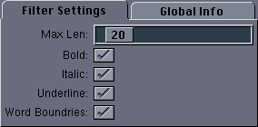

|
User Interface
|
The user interface for this filter looks like this:

The available configuration options are:
- Max Len - The maximum number of characters allowed between
emphasis characters. If more than this number are present, text
emphasis will not be performed.
- Bold - If set, text between asterisks is converted to bold.
- Italic - If set, text between forward slashes is converted to italic.
- Underline - If set, text between underscores is converted to underline.
- Word Boundaries - If set, text style changes are constrained
to word boundaries. This can help to avoid cases where, for example,
forward slashes are used in pathnames and should not turn the text to
italic.
Back to Top
|